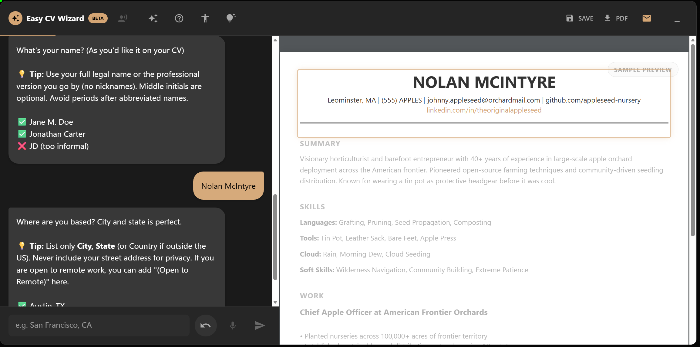
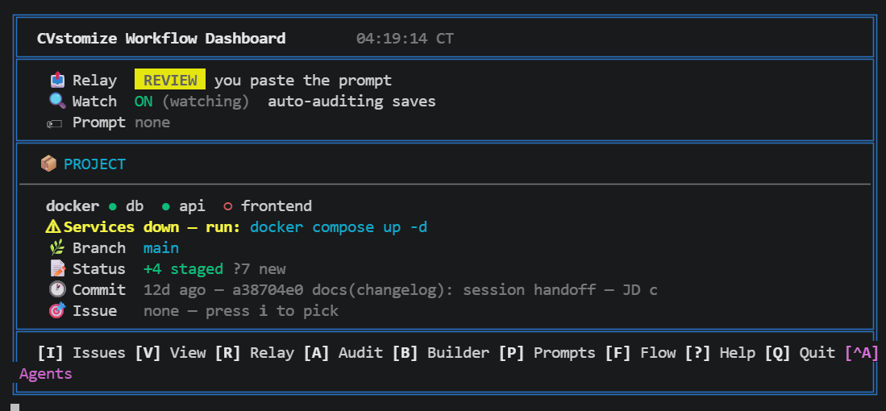
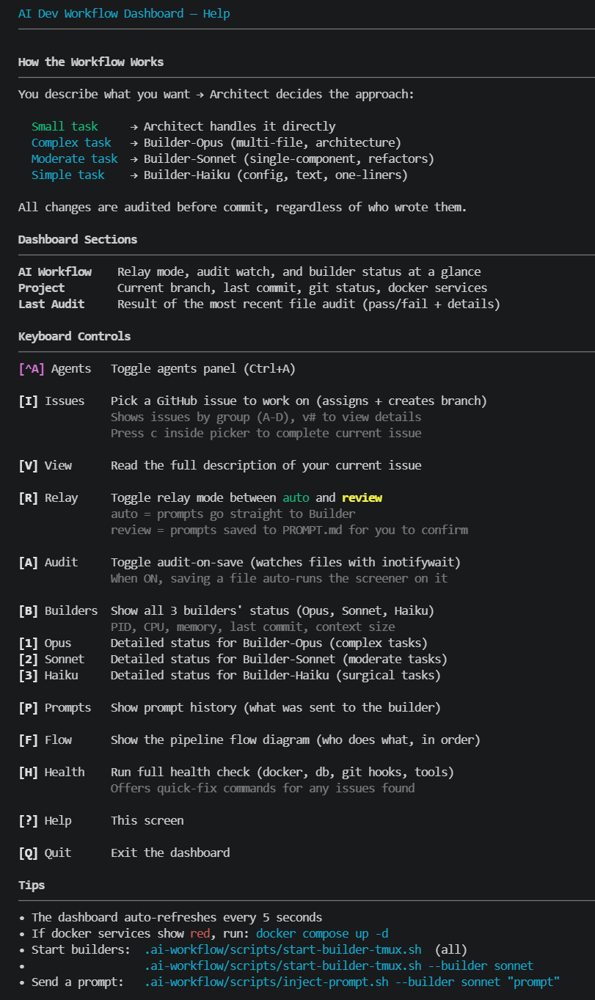

From Hands-On Hardware
to AI-Powered Automation
Self-taught engineer who learned to ship production systems by using AI as both teacher and collaborator. I deconstruct hard problems and build what I need — whether the tool is a wrench, a PCB, or a multi-agent LLM pipeline.
About Me

It took me 25 years to figure out how I learn. The realization came during an Xbox session: playlist ended, a TED Talk started playing, and for some reason I didn’t skip it. The gist: turn your weaknesses into strengths. As I sat there still holding a controller, I realized my weakness was the controller. But it wasn’t really the games. It was the dopamine.
So I reverse-engineered it. If I could trick my brain into getting those same hits from building things, I’d never stop learning. It worked. What followed was obsessive, project-driven self-education: plumbing fundamentals, building a high-CFM air compressor from scratch, becoming a committed right-to-repair advocate. I nearly burned down my house trying to wire 159 5V aRGB LEDs into a single motherboard header. That’s when I got obsessed with electricity. Understanding Ohm’s law and how components interact on a PCBA opened entirely new doors. From there: Python. Then automation. Then AI, which didn’t just accelerate the learning, it changed its shape entirely.
That curiosity never came from a classroom. It came from the same kid who used to lie awake trying to truly comprehend the concept of "infinite" in relation to the universe. School suppressed it for a while. A TED Talk and a near-electrical-fire brought it back for good.
Today I build production software (CVstomize, NoteXT, a stack of internal tools) using AI as both teacher and collaborator. My one formal credential is the DOL-recognized IBM Systems Support Apprenticeship, but the work came first; the credential just caught up. I’m resourceful, cross-disciplinary, and convinced that the ability to view a problem from multiple angles and throw creative solutions into the mix is the real skill. I’m going to build something that helps change lives. One way or another.
And how I get there matters. I won’t work somewhere with a toxic culture, and money isn’t the biggest factor in my decisions. I don’t believe in work-life balance, or in keeping the two completely separate. That framing always sounded like Severance to me, and I’m not interested in being a different person from 9 to 5. We spend a massive chunk of our waking lives working. If I’m passionate about the work, a 65-hour week doesn’t feel different from a 40-hour one. What I won’t do is pour those hours into work I’m not passionate about, no matter how well it pays. Every minute on the job won’t be one I enjoy. That’s reality. But the majority better be, because the whole point of being alive is to enjoy as much of it as possible.
GitHub Repositories
A look at what I'm building — from AI-powered apps to hardware controllers. Private repos are included to show the full scope of my work.

NoteXT
PrivateAn intelligent AI agent that handles logistics. Notes are a byproduct.
Reverse-escalation alerts: push → SMS → persistent notif → call. First ack wins.
You text: "Pick up donuts for Will's birthday Saturday at 9am."
Agent: extracts intent, asks a clarifying SMS if needed, learns the store's typical dwell time.
Saturday morning: calculates "leave by" time from Maps + Places + your routine, then alerts via the escalation chain until you acknowledge.

CVstomize.com
PrivateYour professional identity, organized and shareable.
CVstom Portfolios become the next resume.
Founded and built by me; @ShotenX1 joined after the platform was largely built and contributed across the codebase — CV Wizard is solo.
CV Wizard
Conversational AI builds your profile through dialogue — no blank-page resume paralysis.
CVstom Profile
Single source of truth for skills, experience, and projects. Update once, reflect everywhere.
CVstom Portfolio
Shareable identity at cvstomize.com/u/yourname with viewer-toggleable lenses.
Product · CV Wizard
Have a chat with the Wizard and build out your CV with hints and nudges along the way. Made a mistake? Click any section in the live preview and edit it inline — no form-filling, no blank-page paralysis.

Behind the Build · AI Dev Workflow
Developed inside CVstomize: a TUI orchestration layer where an Architect routes tasks to Opus / Sonnet / Haiku builders by complexity, audit-on-save watches every write with inotifywait, and GitHub issues pipe straight into branch + builder context. Now the workflow I run on every build — later extracted from CVstomize and embedded inside HuminLoop, where it gained a Windows-native GUI (no WSL required).


Dashboard shown is the CVstomize / HuminLoop iteration. The public ai-dev-workflow template repo is the earlier Gemini + Copilot version.

Sell-Aide
Private AI Reseller · Full-StackPhotograph an item → a priced listing, cross-posted to eBay and Facebook Marketplace.
A three-stage AI pipeline identifies the item, grounds a price on real comps, writes the copy — then posts it for you.
Photo → listing pipeline
Each AI layer degrades independently, so a single provider outage never blocks a listing. Long-running jobs flip a status flag server-side and fire a push, so the phone can sleep through processing.
Three Distinctive Features
vision → search → synthesis
AI pipeline
3-provider pipeline. Gemini vision identifies, Vertex AI Search grounds the price on real listings, Grok synthesizes — with graceful degradation at every layer.
FNV-1a seed · temperature 0
deterministic
Reproducible pricing. A seed derived from the item id plus temperature 0 means the same item yields the same price on retry — no random re-rolls.
Android AccessibilityService
native
Headless autofill. A custom Kotlin service reads the Facebook/eBay composer node tree and batch-fills it via fuzzy anchor matching (token-set + bounded Levenshtein), strictly per-package scoped.

INTERFaiCE
Private Real-time AI Telephony Data AccountabilityA real-time AI that answers scam calls for you — Twilio ↔ Deepgram ↔ Gemini Live ↔ Cartesia, sub-second.
Paired with a data-accountability layer: per-company masked addresses that deterministically name whoever leaked you.
Live call pipeline
Full-duplex audio bridges over a WebSocket with μ-law passthrough (no re-encode) to keep latency low. A human operator can steer the persona live, mid-call.
Three Distinctive Features
Twilio ↔ STT ↔ LLM ↔ TTS
realtime
Sub-second voice. A streaming full-duplex pipeline over live telephony with voiceprint matching — natural turn-taking, not a chatbot transcript.
Whisper · Kokoro · Ollama
self-hostable
Local-inference fallback. A fully self-hostable path validated on a consumer GPU; cloud STT/LLM/TTS providers are swappable, not required.
consent gate · append-only ledger
privacy
Privacy in code. Two-party-consent gating and metadata-only, append-only ledgers enforced at the DB layer; a Cloudflare Email Worker is the first-hop leak tripwire.

(Ai)nsworth
Private Attachment CoachAn attachment-theory coaching app that helps you hear your own activations — anxious protest, avoidant withdrawal, repair attempts, bids for connection — in real conversations.
Single-device, owner-focused by default. A speaker-ID gate drops anyone-but-you in RAM before audio touches disk. Couples mediation is opt-in, not the core.
Consent gate (per ~1.5s window, in RAM)
Disk only ever sees consented audio. Cloud Gemini cannot serve as the gate — that would mean transmitting unconsented audio off-device, defeating the all-party-consent legal premise (CA, FL, PA, …). Cloud Gemini 2.5 Pro is reserved for user-initiated deep insight: at most one paid call per session, never in the background.
Three Pillars
VAD → ECAPA → cosine · in RAM
consent gate
Speaker-gated capture. Only your voice (and explicitly enrolled partners) ever touches disk. Gate fails safe — missing model, missing profile, or gate disabled means everything is dropped.
attachment-theory taxonomy
on-device
Hear your own activations. On-device Gemini Nano classifies each utterance — anxious protest, avoidant withdrawal, repair attempts, bids for connection — with short reflective prompts and per-session summaries.
on-device default · ≤1 paid call/session
cost bounded
Inference is split. The always-on path is free — Gemini Nano on every session. Cloud Gemini 2.5 Pro is reserved for user-initiated deep synthesis across transcripts; never background, never automatic.

v2.0.0
HuminLoop
"Human in the Loop" — you stay in it; the AI fills around you.
A context-capture tool for developers, built for ADHD workflows — screenshots, clipboard, and annotations become structured AI coding prompts without breaking flow.
Hybrid Electron app + MCP server. Capture locally; consume from Claude Code, GitHub Copilot, or any MCP-compatible agent.
Capture flow
Clipboard watcher and global hotkey feed the capture popup; the rule engine routes each clip into the right category before enrichment, so context doesn't slip while you switch windows.
Three Distinctive Features
Tray + Hotkey + Clipboard
capture
ADHD-first capture. Global hotkey, tray icon, and clipboard watcher keep context pinned even when you context-switch mid-thought — no tool to open, no file to find.
mcp-server / 16 tools
consume anywhere
MCP integration. 13 knowledge tools + 3 workflow tools callable from Claude Code, GitHub Copilot, or any MCP client. Devcontainer-aware — no port pinning needed.
rules/ — 7-strategy chain
routing
Smart routing. Seven ordered strategies decide how each clip is classified, enriched, and surfaced — deterministic rules run before the LLM, so costs stay bounded and behavior stays predictable.
Inside HuminLoop · AI Dev Workflow
Hosts my AI Dev Workflow — an Architect dispatcher routing tasks to Opus / Sonnet / Haiku builders by complexity, with audit-on-save and GitHub issue intake. Originally built as a TUI inside CVstomize; extracted and embedded here, where it runs Windows-native (no WSL required).


Click any screenshot to expand — click again to zoom in.
Install on Linux (.deb)
curl -LO https://github.com/wyofalcon/HuminLoop/releases/download/v2.0.0/huminloop_2.0.0_amd64.deb && sudo apt install ./huminloop_2.0.0_amd64.deb
Claude Tools

Daemonstrate
Claude Code SkillVisualizes any codebase top-to-bottom — scopes, components, functions, branches — as paired Technical / Plain-English .drawio tabs. Pure Python stdlib, no runtime dependencies.
Three-level cache in .daemonstrate-scopes.json — scopes, sub-component trees, and plain-English translations invalidate independently.

TTYL
Claude Code PluginTalk To You Later — floating Windows tile that flashes when Claude finishes a turn and click-focuses the owning VSCode window, plus a per-session prompt-cache TTL countdown for Claude Code's status line.
Claude Code doesn't expose cache expiry, so TTYL approximates it client-side from SessionStart / UserPromptSubmit / Stop hooks — the countdown ticks only while idle, since active requests are refreshing the 5-minute cache.

summ-ai-rise
Claude Code CommandRe-grounds a Claude instance to where a project actually is. It reads the full turn-by-turn changelog plus memory and context, then reports current direction and any drift. Self-bootstrapping: it also installs the hook that records the changelog. Pure Python stdlib.
A Stop hook logs each turn's ## Review into AI-Summary/ and AI-Discussion/; subagents read the whole history so it never floods the context window.
PoC / Prototypes
Public
ai-dev-workflow
ai-dev-workflow
A structured "Builder/Auditor" framework for AI-assisted development. It orchestrates multi-model workflows (Gemini/Claude + Copilot) to automate code generation, validation, and auditing.
Proof of Concepts
Universal-Desktop-Automator
PublicA universal bridge for command-line AI agents to programmatically control desktop GUIs via mouse, keyboard, and app management, facilitating complex cross-application automation.
ViewAtrium-Core
PrivateAI-integrated business solutions for Master Jeweler. Intelligent automation tooling for a real-world retail operation.
PathaDex
PrivateA dynamic web app to visualize, plan, and track complex career and educational goals. Highly visual workspace.
Hands-On Engineering & Lab Projects

HoverChair
Electric mobile chair built from recycled hoverboard parts. Custom firmware on ESP32 + Raspberry Pi, developed with AI assistance for erasing stock chips and flashing final code.
Gas-Powered Air Compressor
Designed and built a custom high-CFM compressor from scratch to overcome workshop power limitations.
PCB Controller Rebuild
Reconstructed a complex electronic controller, mastering component-level diagnostics and precision soldering.
Network-Wide Ad Blocker
Configured a custom DNS-based ad blocker on a dedicated Linux device to improve network security and performance.
Integrated Fume Extractor
Engineered a modular fume extraction system using a recycled furnace blower for a home workshop.
Home Lab Renovation
Executed a full room renovation, including framing, electrical, plumbing, and soundproofing to build a dream lab.
Core Competencies
AI & LLM Development
- Python Development
- LLM Application Architecture
- Agentic AI & Workflows
- Advanced Prompt Engineering
- API Integration (Gemini, OpenAI)
- Conversational AI Workflows
Process & Workflow Automation
- Workflow Analysis & Optimization
- Rule-Based System Design
- Custom Scripting (Python, JS)
- SaaS Integration (Zapier, Make)
- End-to-End Process Automation
Full-Stack & Operations
- Full-Stack Web Development
- User Authentication (Firebase)
- Rapid Prototyping & Roadmapping
- System Debugging & Configuration
- UI/UX Design Principles
Professional Journey
Independent AI Developer
Self-Directed
April 2026 - Present
Full-time independent development of AI-native applications. Live work includes CVstomize.com (AI-driven resume and portfolio platform with a multi-agent CV Wizard, hosted as a portfolio piece) and HuminLoop (developer context-capture for ADHD workflows), with additional products in active development. Open to full-time roles where AI-augmented engineering accelerates the work.
Test Technician
Benchmark Electronics
September 2025 - April 2026
Executed comprehensive diagnostics on complex electronic assemblies, conducted root cause analysis of system failures, and applied a systematic approach to resolve issues in a fast-paced environment.
System Support Specialist
IBM (Apprenticeship)
February 2024 - February 2025
Provided hands-on support for 200+ IBM Power and Intel servers. Diagnosed and resolved hardware and software faults, escalated root-cause findings, and built troubleshooting playbooks.
"After several years of self-teaching computer architecture and various engineering scopes, I pivoted professionally to systems support and software development."
Server Trainer
Texas Roadhouse & Red Lobster
2015 - 2024
Developed and executed training programs for onboarding new staff on technical processes and service protocols, ensuring high operational standards.
AI Advocacy & Influence
The fastest way to convert someone into an AI user is to solve one of their actual problems in front of them. I've had coworkers, friends, and even my IBM mentor go from skeptical to daily users that way. No pitch, no training deck, just "here's the five-minute version of what you spent an hour on."
At work it reached the point where the team joke became "why don't we just get Nolan to automate it with AI?" That tracks, because that's roughly my mental default now. Not as a replacement for thinking, but as the way to compress the boring parts of a workflow so the interesting parts get more attention.
Let's Build Something Together
I'm always open to discussing new projects, creative ideas, or opportunities to be part of an ambitious team. Feel free to reach out.